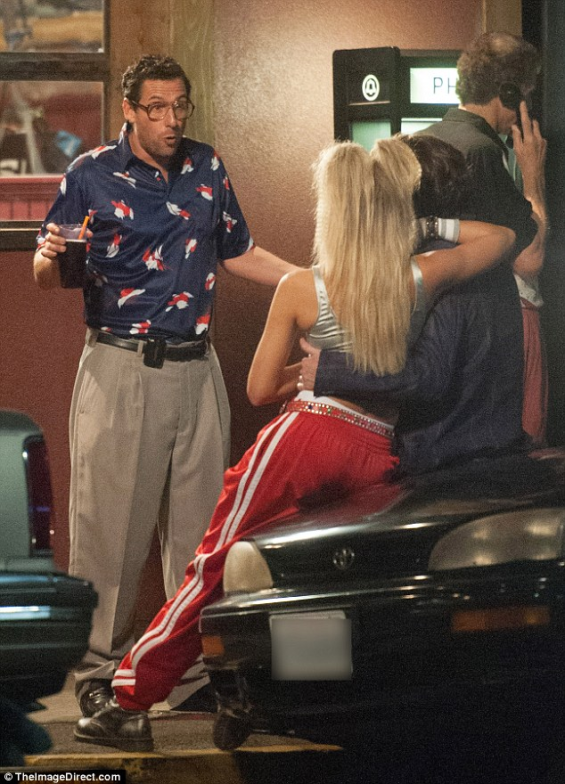

ADAM SANDLER FANSITE
Sandy Wexler (Adam Sandler) is a talent manager working in Los Angeles in the 1990s, diligently representing a group of eccentric clients on the fringes of show business. His single minded devotion is put to the test when he falls in love with his newest client, Courtney Clarke, a tremendously talented singer who he discovers at an amusement park. Over the course of a decade, the two of them play out a star-crossed love story.